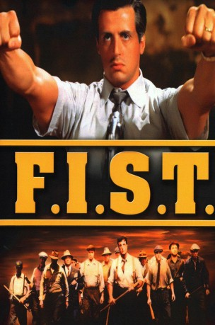
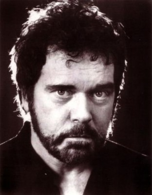

#6132 Ein F.I.S.T. - Mann geht seinen Weg
Alternativ: F.I.S.T. (Englischer Titel)
 
 IMDB-Wertung: 6.4 / 10
IMDB-Wertung: 6.4 / 10  Metascore: 0
Metascore: 0 
Cleveland in den 1930er Jahren. Als der Fernfahrer und Sohn ungarischer Einwanderer Johnny Kovak nach einem Streik entlassen wird, wendet er sich an die Truckergewerkschaft FIST und arbeitet sich im Laufe der Jahre ganz nach oben. Dabei ist ihm jedes Mittel recht, selbst Kontakte zur Mafia sind kein Tabu. Nachdem er jedoch den Gipfel erklommen hat und zum gefeierten Helden der Arbeiterschicht geworden ist, strengt der arbeitseifrige Senator Madison eine Untersuchung der Gewerkschaftsmachenschaften an.
Jahr: 1978
Dauer: 124 Minuten
FSK: 16
Land: USA Studio: United ArtistsTonspuren:
Untertitel:
Auflösung: 1080p (1920x1080) Größe: 6041 MB
Genre: Thriller, Drama, Krimi
Regisseur:  Norman Jewison
Norman Jewison
Drehbuch: Derek Dressler
Soundtrack:
Darsteller:
 Sylvester Stallone als Johnny Kovak
Sylvester Stallone als Johnny Kovak Rod Steiger als Senator Madison
Rod Steiger als Senator Madison Peter Boyle als Max Graham
Peter Boyle als Max Graham Melinda Dillon als Anna Zarinkas
Melinda Dillon als Anna Zarinkas-  Kevin Conway als Vince Doyle
 Tony Lo Bianco als Babe Milano
Tony Lo Bianco als Babe Milano- Cassie Yates als Molly
- Henry Wilcoxon als Win Talbot
 Richard Herd als Mike Monahan
Richard Herd als Mike Monahan- Ken Kercheval als Bernie Marr
 James Karen als Andrews
James Karen als Andrews- Stuart Gillard als Phil Talbot
 Brian Dennehy als Frank Vasko
Brian Dennehy als Frank Vasko- Robert Lipton als Dave Roberts
 Frank McRae als Lincoln Dombrowsky
Frank McRae als Lincoln Dombrowsky Harry Basch als Network Announcer
Harry Basch als Network Announcer- Sidney Clute als Company Negotiator
- Bill Zuckert als Delegate Bob
- Barry Atwater als Milano's Attorney
- Judson Pratt als Kovak's Attorney
- Anthony Kiedis als Kevin Kovak
- Herman Poppe als Gunman #2
- Michael Twaine als FBI Man #1
 Bruce McGill als Hitman , uncredited
Bruce McGill als Hitman , uncredited- David Huffman als Abe Belkin
- Peter Donat als Arthur St. Clair
- John Lehne als Mr. Gant
- Tony Mockus Jr. als Tom Higgins
- Elena Karam als Mrs. Zerinkas
- Joe Tornatore als Angel
- Sam Chew Jr. als Peter Jacobs
- John Bleifer als Mishka
- Rozsika Halmos als Mrs. Kovak
- Earl Montgomery als Russell Langley
- Nada Rowand als Mrs. Vasko
- Chuck Gradi als Jugovich aka Jugs
- Alphonse Skerl als Priest
- Reid Cruickshanks als McGuinn
- M. Patrick Hughes als Jocko
- Martin Braddock als Attorney Negotiations
 Sandy Ward als The Man
Sandy Ward als The Man Andy Romano als Man #1
Andy Romano als Man #1- Frank Whiteman als Gunman #3
- Hugo Bolba als Zigi
- Ron Delagardelle als Samuels
- Robert Courtleigh als Congressman
- David Greene als Senator
- Jimmy Murphy als TV Reporter
- René Le Vant als Newspaper Reporter
- Tony Mendia als Michael Kovak
Datei: X:\1978\F.I.S.T. - Mann geht seinen Weg, Ein (1978, FSK16, 1920x1080).mkv seit 04.05.2017
Festplatte: HD 1971-1979
 Es gibt insgesamt 31 Filme in der Gruppe '1978'
Es gibt insgesamt 31 Filme in der Gruppe '1978'